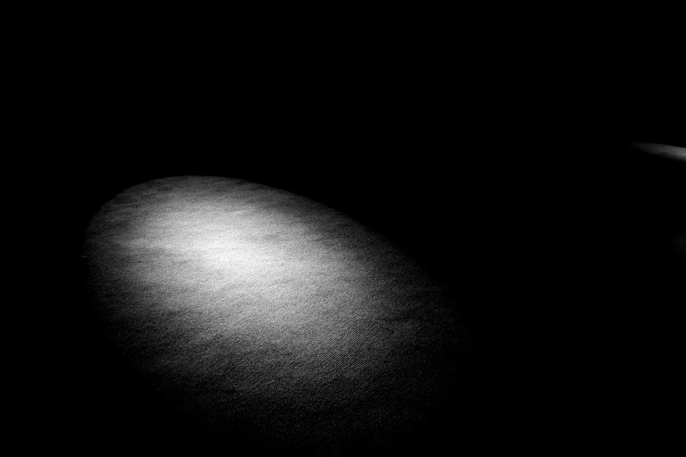

Tjänster
Webbplatsen är nutidens visitkort.
Vi bygger den del av företaget som syns mest, och ser till att den håller.
01
Webbdesign
Skräddarsydda webbplatser som exponerar företaget och är byggda för att hålla över tid.
02
Design
Varumärke och grafisk form, så att sajten ser ut som företaget den tillhör.
03
System
Egna digitala system, som Alunix OS och ett lagersystem, när en färdig lösning inte räcker till.
Utvalda projekt
Tre sajter, samma nivå.
Filosofi
Vårt enda mått: perfektion.
Vår filosofi är att alla har rätt till bra design. Därför har vi valt att lägga oss på en nivå som gör våra tjänster tillgängliga för fler, utan att kompromissa med resultatet.
Kontakt
hej@alunix.seDigital byrå. Webbdesign, design och system, allt på ett ställe.